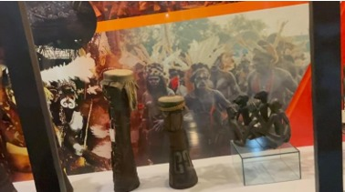

🏘️ Suku Asmat
• Tifa Suku Asmat
Tifa bukan sekadar benda. Ia lahir dari kekuatan alam dan kearifan leluhur. Dibuat dari batang kayu pilihan yang dipahat dengan hati-hati, dan ditutup dengan kulit binatang seperti rusa atau kambing, Tifa membawa suara yang dalam dan menggema, seolah menghubungkan bumi dan langit. Ukiran-ukiran pada tubuh Tifa bukan hiasan semata, melainkan lambang roh-roh leluhur, cerita perang, dan kehidupan masyarakat adat. Adapun kesenian yang biasa menggunakan alat musik tifa sebagai pengiringnya, seperti tari Lenso dari Maluku yang diiringi juga dengan alat musik totobuang, tarian tradisional suku Asmat serta tari Gatsi.
🏡 Jambi

• Kromong dan gong dari jambi
Kromong dan Gong adalah alat musik tradisional dari Jambi yang sering dimainkan dalam upacara adat, pertunjukan seni, dan acara budaya. Kromong berbentuk kecil seperti gong mini dan menghasilkan nada tinggi yang merdu, sedangkan gong memiliki suara yang dalam dan menggema, berfungsi sebagai penanda awal atau akhir dalam lagu.
Alat musik ini biasanya diiringi oleh rebana, gendang, dan serunai. Iringan ini menciptakan suasana yang hidup, ritmis, dan penuh semangat, terutama dalam pertunjukan tari atau musik tradisional Melayu Jambi.
🎉 Bengkulu

• Doll
Doll adalah gendang besar tradisional yang biasa dimainkan dengan pemukul khusus. Tubuhnya terbuat dari kayu, dan bagian atasnya dilapisi kulit sapi yang dikencangkan sedemikian rupa. Suaranya kuat, bergema, dan mampu membangkitkan semangat siapa pun yang mendengarnya. Konon, alat musik ini pertama kali digunakan oleh para pendatang dari India yang menetap di Bengkulu pada masa penjajahan Inggris. Mereka membawa tradisi tabuh dalam perayaan keagamaan. Lambat laun, masyarakat lokal Bengkulu mengembangkan bentuk dan fungsinya, hingga lahirlah Doll seperti yang dikenal sekarang—lebih besar, lebih keras bunyinya, dan menjadi bagian dari identitas budaya daerah. Doll sangat erat kaitannya dengan perayaan Tabot, sebuah tradisi masyarakat Bengkulu untuk memperingati wafatnya cucu Nabi Muhammad SAW, Hasan dan Husein.